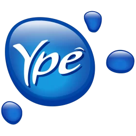
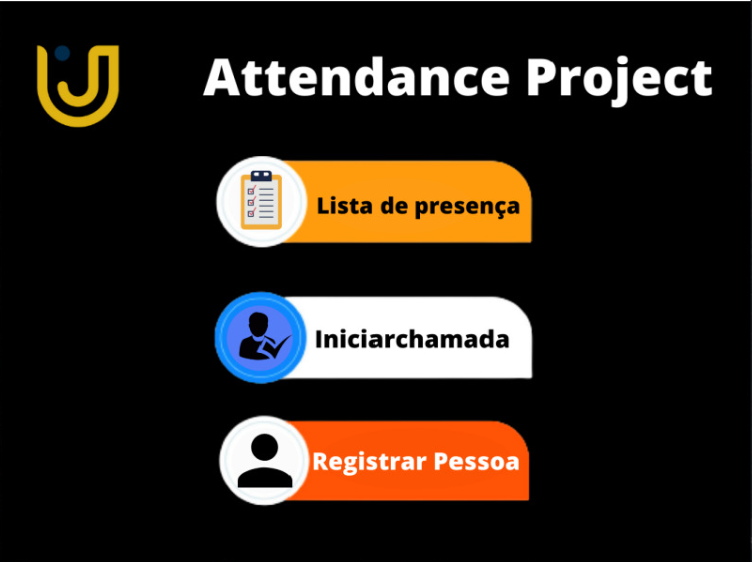

Olá, eu sou Gabriel Victor Reggiani Viaro, residente em Amparo/SP, com 22 anos de idade. Meu tempo fora do mundo da programação é dedicado a assistir futebol e explorar novos mundos através de videogames.
Sou formado em Ciência da Computação desde dezembro de 2022 e estou animado em buscar minha primeira oportunidade como desenvolvedor. Durante minha jornada acadêmica, realizei diversos cursos para aprimorar minhas habilidades em várias linguagens de programação, buscando uma compreensão abrangente antes de me especializar.
Minha experiência profissional anterior concentrou-se na área de Infraestrutura de T.I, onde atuei como Analista de Suporte de TI, desenvolvendo habilidades valiosas em solução de problemas e trabalho em equipe.
Embora minha vivência prática em projetos de programação seja mais evidente durante a faculdade, participei ativamente de projetos diversificados a cada semestre, proporcionando uma base sólida para minhas habilidades.
Atualmente, estou aberto a explorar novas tecnologias sem um foco principal até o momento. Considero-me um colaborador eficaz em equipe, uma habilidade que aprimorei em meu emprego anterior.
Em relação ao idioma, tenho habilidades de leitura em inglês e estou em constante busca por aprimorar minhas habilidades auditivas e verbais.
Meu objetivo a curto prazo é conquistar uma posição na área de desenvolvimento, enquanto a longo prazo busco contínuo crescimento e aprendizado, ciente de que a tecnologia está sempre evoluindo, proporcionando oportunidades constantes de aprendizado.
Estou entusiasmado com os desafios e as oportunidades que a área de desenvolvimento oferece, e estou comprometido em crescer e contribuir significativamente para este campo dinâmico.
Habilidades
HTML
(Avançado)
CSS
(Intermediário)
JavaScript
(Intermediário)
JIRA ServiceDesk
(Avançado)
Active Directory
(Intermediário)
Windows
(Avançado)
Pacote Office
(Intermediário)
PHP
(Básico)
SQL
(Intermediário)
Outsystem
(Básico)
React Native
(Básico)
Python
(Básico)
Lógica de Programação
(Avançado)
Trabalho em Equipe
(Avançado)
Suporte ao Usuário
(Avançado)
Python
(Básico)
Ciência da Computação
UniFaj - 2022
Lógica de Programação
Kenzie - 2021
Workshop OutSystems
SysManager - 2023
JavaScript
Udemy - 2021
React Native
Udemy - Cursando
Flutter
Udemy - Cursando
×
Certificado
Descrição ou detalhes adicionais do certificado.

Aprendiz de Analista de Suporte
YPÊ
05/2021 - 12/2021
Estágio de Analista de Suporte
YPÊ
01/2022 - 12/2022
×
Attendance System
Desenvolvido em Python

A fim de automatizar o processo de chamadas na sala de aula, esse projeto utiliza conceitos de deep learning como reconhecimento facial para tornar essa atividade algo simples e sem necessidade de trabalho humano.
O objetivo do projeto é realizar chamadas em uma sala de aula de maneira automatizada através do reconhecimento facial dos alunos.
Como ele Funciona?
Utilizando um script python que processa imagens através de uma webcam é populado um arquivo csv contendo o nome da pessoa e horario em que ela foi encontrada. Sempre que esse csv é atualizado essa informação é enviada a um servidor que está rodando em segundo plano que guarda todas as informações que estão sendo logadas. Depois dessa fase de processamento e envio ao servidor existe uma pagina web que consome essas informações no servidor e gera uma visão mais limpa e clara sobre essas informações.
É um emocionante jogo 2D desenvolvido com Unity e programado em C#. O jogo apresenta uma experiência envolvente, desafiadora e divertida, onde os jogadores embarcam em uma jornada através de várias fases, enfrentando obstáculos e desafios crescentes.
O principal objetivo do jogo é conduzir o personagem do início ao final de cada fase, evitando quedas em buracos traiçoeiros e colisões com objetos e animais que representam ameaças mortais. Os jogadores precisam demonstrar habilidades de reflexo, estratégia e destreza para superar cada desafio e progredir no jogo.
O jogo foi cuidadosamente desenvolvido usando a poderosa combinação da engine Unity e a linguagem de programação C#. O processo de criação do jogo envolveu várias etapas cruciais para garantir uma experiência de jogo fluida e envolvente.
Projeto de TCC do curso de Ciência da Computação - UniFAJ
projeto de Trabalho de Conclusão de Curso (TCC) representa a criação de um Sistema de Alocação Educacional, desenvolvido utilizando PHP, CSS e SQL. Este sistema inovador visa otimizar a alocação de professores, salas de aulas e aulas para cursos, proporcionando uma gestão eficiente e organizada no ambiente educacional.
O Sistema visa melhorar a eficiência na gestão acadêmica, reduzindo o tempo gasto na alocação manual e minimizando erros. Espera-se que esta solução contribua para uma administração mais eficaz dos recursos educacionais, promovendo um ambiente de aprendizado organizado e produtivo.
Esta calculadora foi desenvolvida como parte dos estudos em React Native, proporcionando uma experiência 100% funcional e um design que remete à interface elegante da calculadora presente nos dispositivos iPhone. Este projeto destaca a capacidade de criar aplicações móveis eficientes e esteticamente agradáveis utilizando a tecnologia React Native.